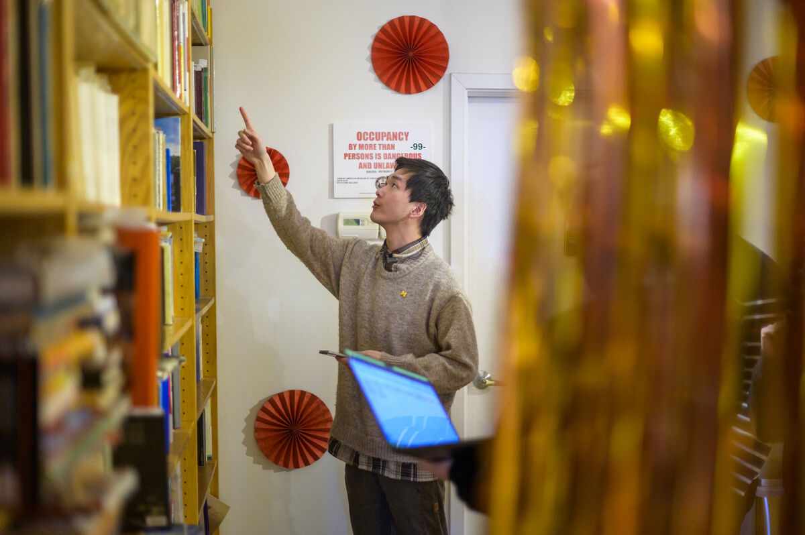
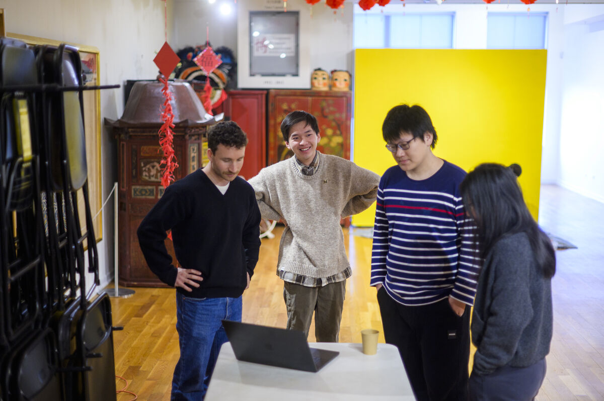

The Power of Closing Well and Reflecting Deeply
A project is not complete simply because the final deliverable has been handed over. The final stages—closing, reflecting, and translating—are what transform a transient project into lasting organizational value and personal career momentum.
Responsible handoffs ensure that partners are not left with abandoned tools or undocumented systems they cannot maintain. Simultaneously, structured reflection forces you to pause and ask: What did I learn about my technical skills, my teamwork style, and the ethical impact of my work? Without reflection, experience is just something that happened to you; with reflection, experience becomes expertise. Learning to translate complex, messy project narratives into clear resume bullets and portfolio case studies is what turns your UMSI education into your greatest professional asset.
After the Experience (Career Integration & Portfolios)
Value & Narrative
Employers do not just hire technical skills—they hire people who can solve unscripted problems, collaborate in diverse teams, and deliver results under realistic constraints. This track guides you in bridging the gap between your academic work and your professional brand, helping you articulate the full narrative of your growth.


Focus & Objectives
- Articulating Skills: Translate unscripted, complex project work into compelling resume bullets and interview responses.
- Portfolio Integration: Document your process, artifacts, key decisions, and measurable outcomes.
- Maintaining Networks: Keep professional touchpoints open with mentors, community partners, and teammates.
Featured Resources & Handouts
- How to Include Project Experience on Student Resumes: Step-by-step guide to translating client/course projects into high-impact resume experience.
- How to Engage with UMSI on Social Media: Best practices for sharing project milestones, tagging partners, and showcasing work publicly on LinkedIn.
- STAR Method Project Reflection Sheet: Template to help you prep interview stories around teamwork, conflict, and technical problem-solving.